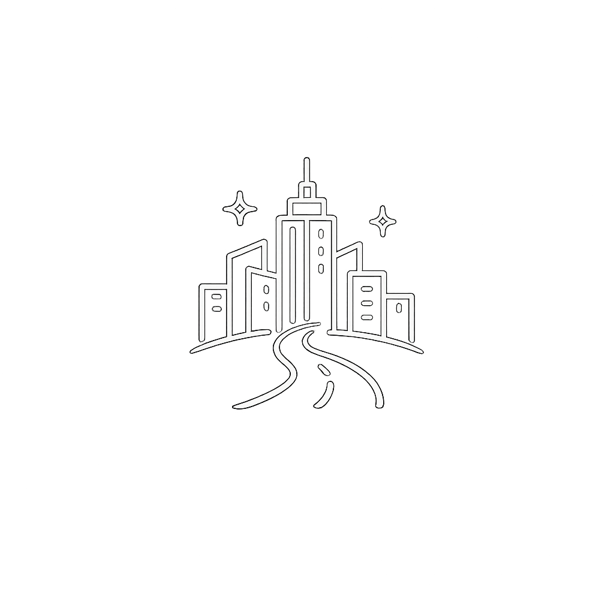
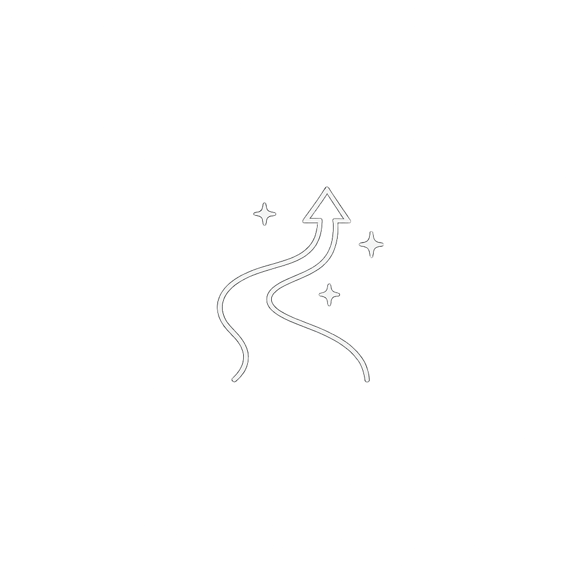

MCM FROM ME
CHAPTER 1
What story are you creating
today?
Choose a moment that moves you.

URBAN ESCAPE
익숙한 도시를 벗어나는
순간

NEW JOURNEY
새로운 시작을 앞둔
순간
CREATIVE FLOW
자유로운 영감이 필요한
순간
MIDNIGHT MOVE
밤의 도시를 즐기고
싶은 순간
CONTINUE